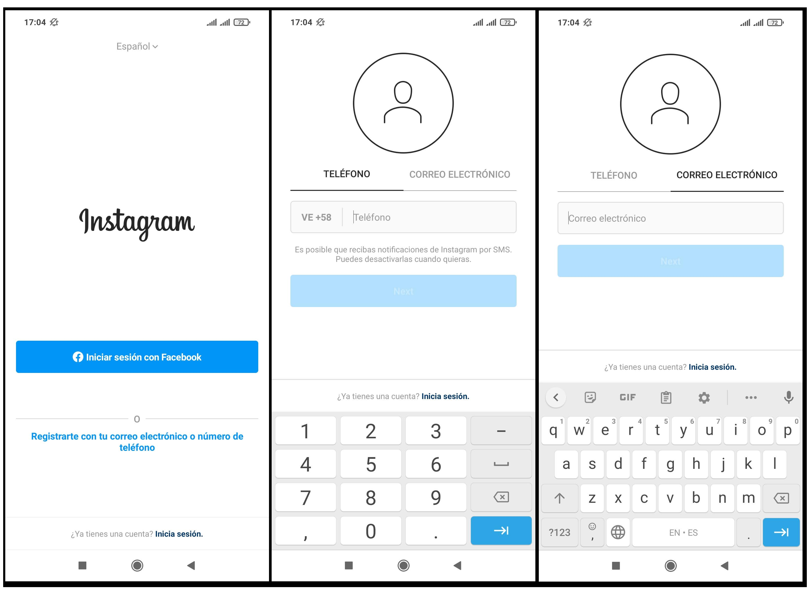
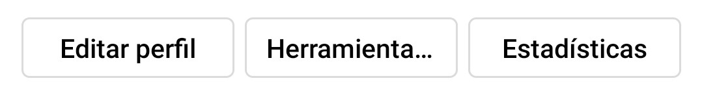

Para comenzar...
Lo primero y principal que necesitarás es tu móvil; aunque Instagram cuenta con la versión de ordenador esta no tiene tantas opciones ya que, por ejemplo, no podrás subir imágenes por lo que a no ser que quieres utilizar Instagram de forma profesional, no es recomendable el computador. Ya que esta es una red social que está pensada para compartir los momentos en imágenes, es recomendable que cuentes con un dispositivo móvil con una buena cámara, del cual puedas disponer en todo momento.
Ahora que ya tienes un dispositivo, es necesario descargar la aplicación de Instagram. Esto lo puedes hacer desde la Play Store o Apple Store (Depende de tu dispositivo). Lo siguiente será crearte una cuenta; para esto sólo necesitas ingresar tu correo electrónico o número de teléfono, o si prefieres también te da la opción de ingresar con tu Facebook.

Hora de configurar tu perfil
Una opción para los nuevos emprendedores en instagram es cambiar la cuenta de personal a profesional (para esto debes ir a configuración, haz clic en ‘Cuenta’ y después toca el botón de ‘Cambiar a cuenta profesional’. Por último, elige si quieres ser creador o empresa.) Con este tipo de perfil profesional contarás con tres nuevos botones abajo de tu biografía: Editar perfil, Herramientas y Estadísticas; además tendrás acceso a una gran cantidad de información sobre tu cuenta: estadísticas, seguidores nuevos y podrás hacer anuncios para promocionar tu perfil.

Asegúrate de que tu perfil sea lo más atractivo posible para los nuevos seguidores, además que te logre representar a ti o a tu marca de una manera eficaz, para esto es necesario:
- Escoger un nombre de usuario fácil de reconocer y encontrar (no te compliques, recuerda que menos es más). Ten en cuenta que el nombre debe coincidir con tu marca, para que a los usuarios les sea fácil de encontrar.
- Algo que debes tener en cuenta a la hora de elegir tu foto de perfil en instagram, es que esta se muestra en forma redonda. Usa la misma foto que utilizas en tus otros perfiles sociales para ayudar a la gente a identificar tu marca. Si usas una cuenta personal como influencer verifica que la foto se vea optima. La foto se muestra en 110 x 110 px, pero se almacena a 320 x 320 px. Esto significa que es buena idea subir una foto de al menos 320 px cuadrados. De esta manera, estarás preparado en caso de que Instagram cambie la forma en la que se muestran las fotos de perfil.
- Tu biografía de Instagram tan solo cuenta con 150 caracteres y sólo debe llevarte un par de líneas. pero, debe cumplir una tarea súper importante. Explica brevemente a qué se dedica tu empresa, aquí puedes agregar hashtags, estos son una excelente manera de mostrar el contenido generado por los mismos usuarios. Puedes utilizar espacios y saltos de línea; los espacios hacen que tu biografía sea más fácil de leer. Si tienes página web añade la URL a tu descripción, así los usuarios podrán ver todo sobre tu marca. No olvides tu información de contacto
Otras aspectos a considerar:
Instagram es una red completamente visual, por lo que es importante tener una identidad visual reconocible. Piensa qué es lo que te gustaría mostrar en tus publicaciones. Si lo que tu ofreces es un servicio, prueba mostrando las historias de tus clientes (las puedes reunir a través de un hashtag de marca). También, puedes hacer un detrás de cámaras para destacar el día a día en tu oficina o presentarle a tus fans las personas que hacen funcionar a tu empresa.
Una vez que hayas decidido la temática de tu contenido, utiliza un aspecto visual consistente. Es decir, usa colores y filtros uniformes y, en general, una estética visual que tus seguidores puedan reconocer inmediatamente mientras revisan su feed. Las fotos que subas deben ser reconocibles e ir dirigidas al público que quieras obtener, y por supuesto deben ser de únicas y de buena calidad. Sin embargo, no necesitas tener una cámara profesional y un aro de luz. Basta con tu móvil y una buena iluminación.
Mantente presente. No es necesario publicar todos los días, pero si tener un perfil activo y que los seguidores vean que al menos, todas las semanas, hay algo nuevo. Las historias te pueden ayudar a mantenerte activo y en contacto con tus seguidores; has encuestas, responde preguntas, has dinámicas y notifica de tus nuevas publicaciones. No te limites; con los reels, videos, carruseles, historias y fotos puedes subir una gran cantidad de contenido variado a tu cuenta.